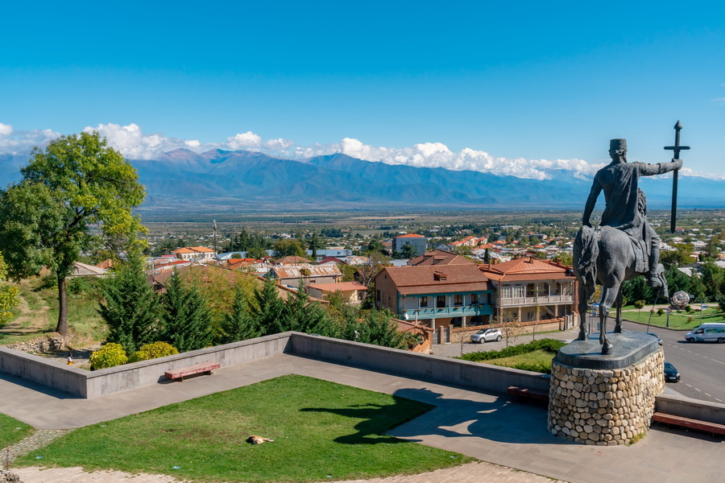

From the 10th until the 12th century, Telavi served as the capital of the Kingdom of Kakheti and later Kingdom of Kakhet-Hereti. During the Golden Era of the Georgian State (12th–13th centuries), Telavi turned into one of the most important political and economic centers of the Georgian State.
Erekle II King of Kartli and Kakheti
The reign of King Erekle II, who was born and died in this city, was a special epoch in the history of Telavi. During this period (1744–1798) it grew into a strategic and cultural center.